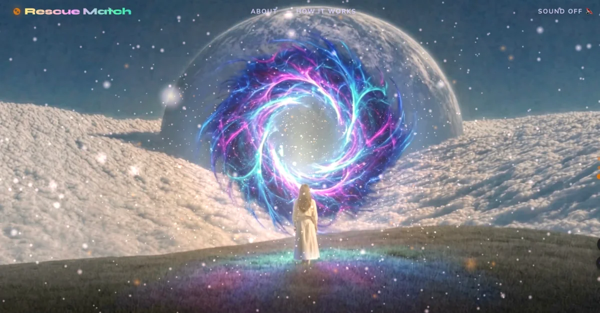
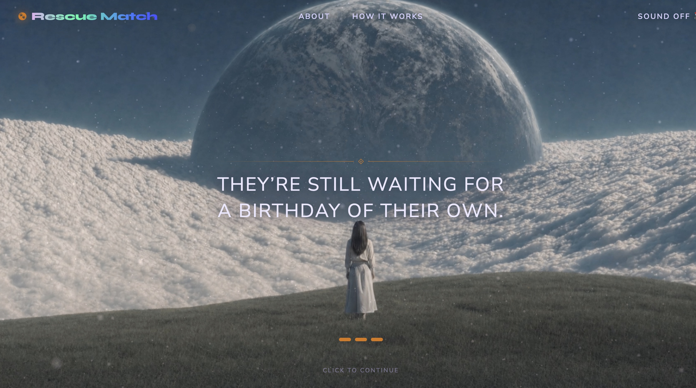
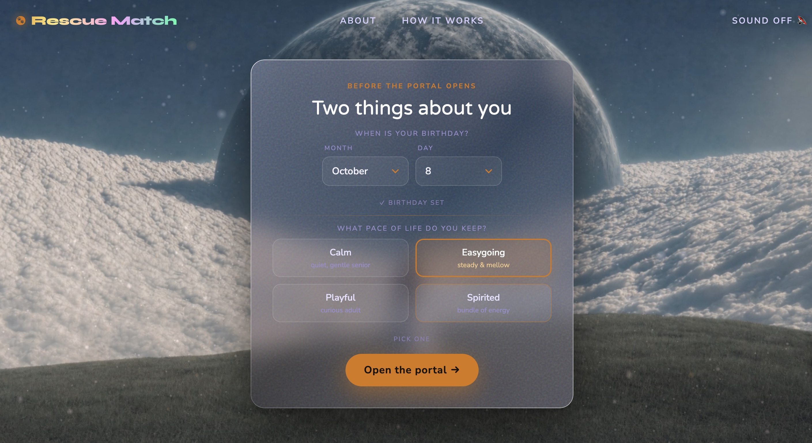
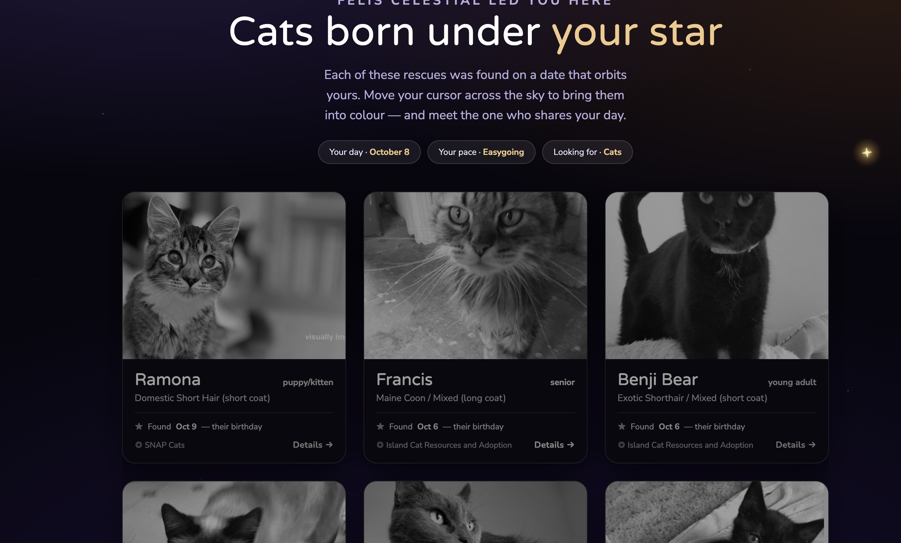
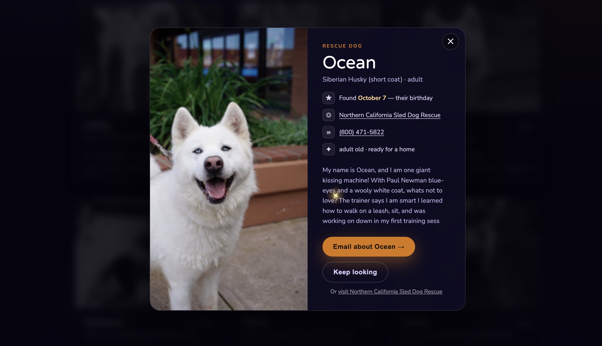

Most pet adoption sites are search engines. You arrive with no criteria, face a filtered list of strangers, and leave. Rescue Match gives the search a reason to start: enter your birthday, choose your energy, follow your constellation, and meet a real Bay Area rescue animal who entered the shelter system on your exact month and day.

The portal screen. Three videos crossfade as you scroll — beginning loop, portal journey, ending loop — with the journey scrubbed forward in real time so every frame plays and never seeks backward. A Three.js particle dust field fills the tunnel; the logo is TextGeometry with a custom GLSL gradient shader.

The line that sets up the premise, held on screen before any interaction is asked for. Scroll is the only control on this screen.

Two questions, asked once. A birthday and a pace of life stand in for the filter panel every other adoption site opens with.

The results arrive desaturated and come into colour as the cursor passes over them, so the grid rewards looking rather than scanning. Each card carries the animal's found date against the visitor's own, and the shelter holding them.

The profile leads with the shared date, then the shelter, phone number, and the animal's own description — everything needed to make contact without leaving the page.
Outcome
~20
Bay Area shelter organizations queried in parallel through the RescueGroups v5 API.
3
Choices between arrival and result — birthday, energy, constellation. No filter panel.
1 email
Every profile opens a pre-filled message to the shelter holding that animal.
Matching runs client-side against animals fetched from every org at once, comparing each record's intake date to the visitor's month and day. When no exact-day match exists it falls back to the same month rather than returning nothing, so the experience always ends with an animal rather than an empty state.